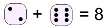
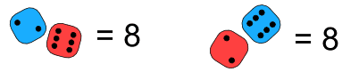
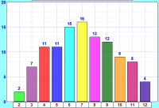
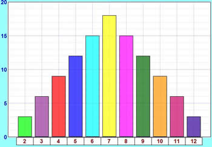

Activity: An Experiment with Dice
Let's throw two dice and add the scores ...
|
You will need:
|
 |
Interesting point
Many people think that one of these cubes is called "a dice". But no!
The plural is dice, but the singular is die: i.e. 1 die, 2 dice.
The common die has six faces:

We usually call the faces 1, 2, 3, 4, 5 and 6.
Throwing Two Dice and Adding the Scores ...
Example: when one die shows 2 and the other shows 6 the total score is 2 + 6 = 8

Question: Can you get a total of 8 any other way?
What about 6 + 2 = 8 (the other way around), is that a different way?
Yes! Because the two dice are different.
Example: imagine one die is colored red and the other is colored blue.
There are two possibilities:

So 2 + 6 and 6 + 2 are different.
And you can get 8 with other numbers, such as 3 + 5 = 8 and 4 + 4 = 8
High, Low, and Most Likely
Before we start, let's think about what might happen.
Question: If you throw 2 dice together and add the two scores:
- 1. What is the least possible total score?
- 2. What is the greatest possible total score?
- 3. What do you think is the most likely total score?
The first two questions are quite easy to answer:
- 1. The least possible total score must be 1 + 1 = 2
- 2. The greatest possible total score must be 6 + 6 = 12
- 3. The most likely total score is ... ???
Are they all just as likely? Or will some happen more often?
To help answer the third question let us try an experiment.
The Experiment
Throw two dice together 108 times,
add the scores together each time,
record the scores in a tally table.
Why 108? That seems a strange number to choose. I will explain later.
You can record the results in this table using tally marks:
| Added Scores |
Tally | Frequency |
| 2 | ||
| 3 | ||
| 4 | ||
| 5 | ||
| 6 | ||
| 7 | ||
| 8 | ||
| 9 | ||
| 10 | ||
| 11 | ||
| 12 | ||
| Total Frequency = | 108 |
OK, Go!
... ...
... ...

Finished ...?
Now draw a bar graph to illustrate your results.
You can make your own.
Or you can use Data Graphs (Bar, Line and Pie) then print it out.

You may get something like this:
- Are the bars all about the same height?
- If not ... why not?
So Why Did We Get That Shape?
The explanation is simple:
- There is only one way to get a total of 2 (1 + 1),
- but there are six ways of getting a total of 7 (1 + 6, 2 + 5, 3 + 4, 4 + 3, 5 + 2 and 6 + 1)
Here is a table of all possibile outcomes, and the totals. I have also shown what adds to 7 in bold.
| Score on One Die | |||||||
| 1 | 2 | 3 | 4 | 5 | 6 | ||
| Score on the Other Die |
1 | 2 | 3 | 4 | 5 | 6 | 7 |
| 2 | 3 | 4 | 5 | 6 | 7 | 8 | |
| 3 | 4 | 5 | 6 | 7 | 8 | 9 | |
| 4 | 5 | 6 | 7 | 8 | 9 | 10 | |
| 5 | 6 | 7 | 8 | 9 | 10 | 11 | |
| 6 | 7 | 8 | 9 | 10 | 11 | 12 | |
You can see there is only 1 way to get 2, there are 2 ways to get 3, and so on.
Let us count the ways of getting each total and put them in a table:
| Total Score |
Number of Ways to Get Score |
| 2 | 1 |
| 3 | 2 |
| 4 | 3 |
| 5 | 4 |
| 6 | 5 |
| 7 | 6 |
| 8 | 5 |
| 9 | 4 |
| 10 | 3 |
| 11 | 2 |
| 12 | 1 |
| Total = 36 |
Can you see the Symmetry in this table?
- 2 and 12 have the same number of ways = 1 each
- 3 and 11 have the same number of ways = 2 each
- 4 and 10 have the same number of ways = 3 each
- 5 and 9 have the same number of ways = 4 each
- 6 and 8 have the same number of ways = 5 each
108 Throws
OK, why 108 throws? Well, 36 throws isn't enough for good results, 360 throws is great but takes a long time. So 108 (which is 3 lots of 36) seems about right.
So let's multiply all these numbers by 3 to match our total of 108:
| Total Score |
Number of Ways to Get Score |
| 2 | 3 |
| 3 | 6 |
| 4 | 9 |
| 5 | 12 |
| 6 | 15 |
| 7 | 18 |
| 8 | 15 |
| 9 | 12 |
| 10 | 9 |
| 11 | 6 |
| 12 | 3 |
| Total = 108 |
Those are the theoretical values, as opposed to the experimental ones you got from your experiment.
The theoretical values look like this in a bar graph:

How do these theoretical results compare with your experimental results?
This graph and your graph should be quite similar, but they are not likely to be exactly the same, as your experiment relied on chance, and the number of times you did it was fairly small.
If you did the experiment a very large number of times, you should get results much closer to the theoretical ones.
And, by the way, we've now answered the question from near the beginning of the experiment:
What is the most likely total score?
- 7 has the highest bar, so 7 is the most likely total score.
Hey, is that why people talk about Lucky 7 ... ?
Probability
On the page Probability you will find a formula:
Probability of an event happening = Number of ways it can happen Total number of outcomes
Example: Probability of a total of 2
We know there are 36 possible outcomes.
And there is only 1 way to get a total score of 2.
So the probability of getting 2 is:
Probability of a 2 = 1 36
Doing that for each score gets us:
| Total Score |
Probability |
| 2 | 1/36 |
| 3 | 2/36 |
| 4 | 3/36 |
| 5 | 4/36 |
| 6 | 5/36 |
| 7 | 6/36 |
| 8 | 5/36 |
| 9 | 4/36 |
| 10 | 3/36 |
| 11 | 2/36 |
| 12 | 1/36 |
| Total = 1 |
The sum of all the probabilities is 1
For any experiment:
The sum of the probabilities of all possible outcomes is always equal to 1